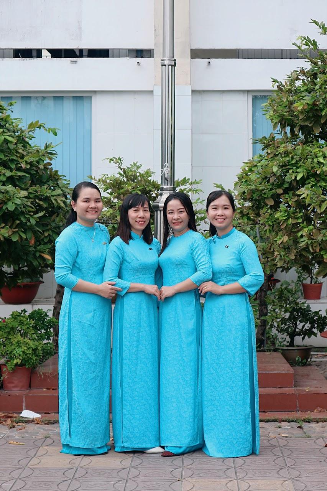
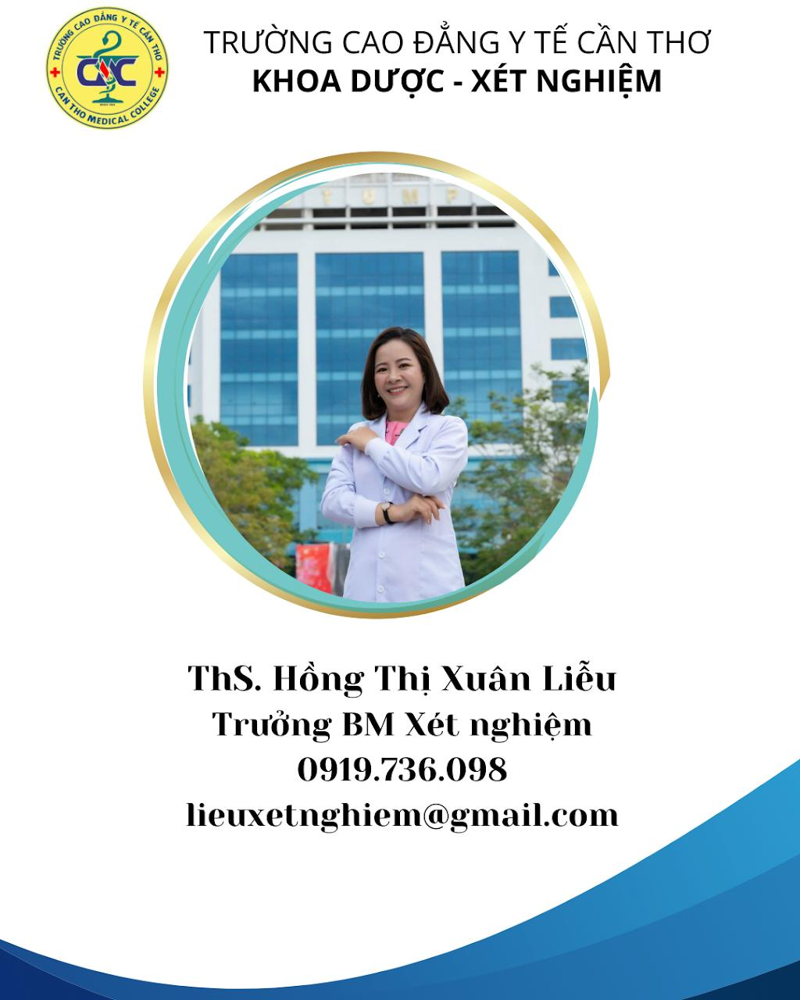

Giới thiệu
Bộ môn Xét nghiệm là đơn vị trực thuộc Khoa Dược - Xét nghiệm Trường Cao đẳng Y tế Cần Thơ. Công tác chính của bộ môn là giảng dạy các lớp xét nghiệm trình độ cao đẳng, trung cấp ngành Kỹ thuật xét nghiệm y học. Ngoài ra còn giảng dạy các môn Hoá sinh, Vi sinh - ký sinh trùng cho các khối lớp Điều dưỡng, Dược, Hộ sinh, phục hồi chức năng và Y sĩ đa khoa.
Bộ môn Xét nghiệm có nhiệm vụ tổ chức thực hiện chương trình đào tạo, kế hoạch giảng dạy, học tập, các hoạt động nghiên cứu khoa học; tổ chức biên soạn chương trình, giáo trình môn học; phối hợp với các phòng chức năng, các bộ môn khác trong nhà trường thực hiện các mục tiêu, nhiệm vụ do nhà trường phân công.
NHÂN SỰ BỘ MÔN XÉT NGHIỆM

Cùng điểm qua các hoạt động tiêu biểu của Bộ môn Xét nghiệm